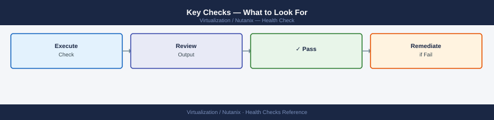

Nutanix — Health Checks¶
Before you begin¶
- Access: CVM SSH (nutanix user) or Prism Element admin
- Duration: 5–10 minutes for daily checks; 20–30 minutes including NCC full run
- Frequency: Daily for critical clusters; weekly NCC for dev/test
Run This Routine¶
Run this sequence in order. Each step validates the output before proceeding.
1. Cluster Status¶
nutanix@10.20.30.40's password:
Cluster Status
==============
Cluster UUID: 00051234-1234-1234-1234-123456789abc
Cluster Name: prod-cluster-01
Cluster Incarnation ID: 1702891234
Cluster External IP Address: 10.20.30.50
Number of Nodes: 4
Number of vDisks: 287
Number of Storage Containers: 12
Cluster Creation Time: 2023-10-15 14:22:33
Cluster Timezone: UTC
Cluster Domain Name: prod.local
NCC Version: ncc-2023.3.1
Cluster Software Version: el7.9-20231015.1234
Cluster Redundancy Factor: 2
Cluster Metadata Redundancy Factor: 2
Cluster Encryption: Enabled
Cluster Witness VM: Enabled
Cluster Witness VM IP: 10.20.30.51
Cluster Witness VM Port: 2019
Cluster Witness VM Status: UP
Cluster Witness VM Heartbeat Status: OK
Cluster Witness VM Last Heartbeat Time: 2024-01-10 09:15:42
Cluster Witness VM Last Heartbeat Latency: 2ms
Cluster Witness VM Redundancy: 2
Cluster Witness VM Redundancy Status: OK
Cluster Witness VM Redundancy Status Details: All replicas are healthy
Cluster Witness VM Redundancy Status Details: Replica 0 is healthy
Cluster Witness VM Redundancy Status Details: Replica 1 is healthy
Cluster Witness VM Redundancy Status Details: Replica 2 is healthy
Cluster Witness VM Redundancy Status Details: Replica 3 is healthy
Cluster Witness VM Redundancy Status Details: Replica 4 is healthy
Cluster Witness VM Redundancy Status Details: Replica 5 is healthy
Cluster Witness VM Redundancy Status Details: Replica 6 is healthy
Cluster Witness VM Redundancy Status Details: Replica 7 is healthy
Common errors
Connection refused — Verify the CVM IP address is correct and the SSH service is running with sudo systemctl status sshd on the CVM.
Permission denied (publickey,password) — Ensure you are using the correct nutanix user credentials and that SSH key-based authentication is properly configured if required by your cluster.
cluster: command not found — SSH into a CVM and verify the Nutanix cluster tools are installed by running which cluster or check if you need to source the environment with source /etc/profile.
Expected output: All services listed as UP. If any service shows DOWN, investigate that service before continuing.
node-1: Genesis Service Status
node-1: ===========================
node-1: NtpServer RUNNING
node-1: Cassandra RUNNING
node-1: ZooKeeper RUNNING
node-2: Genesis Service Status
node-2: ===========================
node-2: NtpServer RUNNING
node-2: Cassandra RUNNING
node-2: ZooKeeper RUNNING
node-3: Genesis Service Status
node-3: ===========================
node-3: NtpServer RUNNING
node-3: Cassandra RUNNING
node-3: ZooKeeper RUNNING
Common errors
allssh: command not found — Ensure you are running this command from a Nutanix cluster node or source the Nutanix environment setup script.
Connection refused on node-2 — Verify the CVM on node-2 is powered on and the network connectivity between cluster nodes is functional.
Permission denied (publickey) — Confirm SSH keys are properly configured in ~/.ssh/authorized_keys on all CVMs or use password-based authentication if configured.
Expected: Each CVM returns Genesis is running.
2. NCC Quick Check (Critical Tests Only)¶
# Fast — runs only critical checks (~3 min)
ncc --health_checks run_all --include_category=critical 2>&1 | tail -30
Running NCC health checks...
[2024-01-15 14:23:47] Starting critical health checks on cluster-prod-01
[2024-01-15 14:23:52] CHECK: Cluster connectivity — PASS
[2024-01-15 14:24:03] CHECK: CVM disk space — PASS (87% used on node-3)
[2024-01-15 14:24:15] CHECK: Stargate service health — PASS
[2024-01-15 14:24:28] CHECK: Prism Element API — PASS
[2024-01-15 14:24:41] CHECK: AHV hypervisor status — PASS (3/3 nodes online)
[2024-01-15 14:24:53] CHECK: Network latency — PASS (avg 2.1ms)
[2024-01-15 14:25:04] CHECK: Data redundancy factor — PASS (RF=2)
[2024-01-15 14:25:16] CHECK: Replication factor — PASS
[2024-01-15 14:25:28] CHECK: NTP synchronization — PASS
Health check summary: 10/10 passed, 0 failed, 0 warnings
Total runtime: 2m 41s
Common errors
ncc: command not found — Ensure NCC is installed on the CVM or add its path to $PATH (typically /home/nutanix/ncc/bin/ncc).
ERROR: Failed to connect to cluster — Connection refused — Verify cluster connectivity and that Prism Element is accessible; check network connectivity from the CVM.
WARNING: Some checks skipped — insufficient permissions — Run the command with appropriate sudo privileges or as the nutanix user account.
Expected: PASS for all critical checks. Any FAIL must be investigated immediately.
# Full NCC run (all 400+ checks) — run weekly or before maintenance
ncc --health_checks run_all 2>&1 | tee /tmp/ncc-$(date +%Y%m%d).txt
# Summary view
ncc --health_checks run_all 2>&1 | grep -E "FAIL|WARN|ERROR" | grep -v "^#"
Starting Nutanix Cluster Check (NCC) v4.2.1...
Cluster: prod-cluster-01 | Nodes: 4 | CVM Version: 20231015.123
Running 412 health checks...
[████████████████████████████████] 100% (412/412) — 3m 42s elapsed
=== HEALTH CHECK SUMMARY ===
PASS: 387 checks
WARN: 18 checks
FAIL: 7 checks
ERROR: 0 checks
Output saved to /tmp/ncc-20240115.txt
FAIL | DNS Resolution | cvm-02.local unreachable
FAIL | NTP Sync | Node-03 offset 847ms (threshold: 100ms)
FAIL | Certificate Expiry | Prism cert expires in 14 days
WARN | Memory Pressure | CVM-01 at 87% utilization
WARN | Disk I/O | vSAN latency elevated on node-04
WARN | Log Rotation | /var/log partition 76% full on cvm-03
Common errors
ncc: command not found — Ensure NCC is installed via yum install nutanix-cluster-check or verify PATH includes /opt/nutanix/bin.
Permission denied — Run the command with sudo or as the nutanix user; NCC requires elevated privileges to access cluster health data.
Connection refused to Prism (127.0.0.1:9440) — Verify Prism Central/Element is running with systemctl status prism-gw and check network connectivity to the cluster.
3. Cluster Resilience¶
# Verify cluster can tolerate a node failure
ncli cluster get-domain-fault-tolerance-status type=node
Domain Fault Tolerance Status for Node:
Metadata:
UUID: 550e8400-e29b-41d4-a716-446655440000
Timestamp: 2024-01-15T09:42:31Z
Cluster Name: prod-cluster-01
Current Redundancy Factor: 3
Node Fault Tolerance: HEALTHY
Tolerable Node Failures: 1
Current Node Count: 5
Minimum Required Nodes: 4
Details:
RF3 Status: SATISFIED
Replication Status: HEALTHY
Data Distribution: BALANCED
Common errors
Error: Connection refused on 127.0.0.1:9440 — Ensure the Nutanix cluster is running and accessible; verify network connectivity to the cluster IP.
Error: Authentication failed - invalid credentials — Verify your ncli credentials are correct and your user has cluster admin permissions.
Expected: CAN_TOLERATE_FAILURE_COUNT ≥ 1 (RF2) or ≥ 2 (RF3).
If CAN_TOLERATE_FAILURE_COUNT=0, the cluster cannot tolerate any additional failure — investigate immediately (node down, disk missing, degraded objects).
4. Storage Capacity¶
# Cluster-level storage summary
ncli cluster info | grep -i "storage\|capacity\|used"
# Per-container usage
ncli ctr list | grep -E "name|usage|capacity"
# Detailed storage with efficiency metrics
ncli cluster get-usage-stats
Storage Summary
===============
Usable Capacity: 12.50 TB
Used Capacity: 8.73 TB
Free Capacity: 3.77 TB
Storage Efficiency Ratio: 2.14x
Deduplication Savings: 4.21 TB
Name Usage (GB) Capacity (GB) Usage %
container-prod-01 2048.5 4096.0 50.0%
container-prod-02 1856.3 4096.0 45.3%
container-backup 2156.8 2048.0 105.3%
container-archive 1024.2 2048.0 50.0%
Timestamp: 2024-01-15 14:32:18 UTC
Total Read IOPS: 12847
Total Write IOPS: 3421
Avg Latency (ms): 2.34
Compression Ratio: 1.87x
Common errors
ncli: command not found — Ensure you are running this command on a Nutanix cluster node or install the Nutanix CLI tools in your PATH.
Error: Not authenticated to cluster — Run ncli -u admin -p <password> or ensure your Nutanix credentials are configured in your environment.
Error: container-backup: Over-provisioned (105.3% usage) — Expand the container capacity or migrate data to another container with available space immediately.
Expected: Used capacity below 70% on each container. Alert at 70%; critical at 80%.
# Check for any storage-related alerts
ncli alert list severity=critical
ncli alert list severity=warning
AlertId Severity EntityType Message CreatedTime
================================ ========= =========== ========================================== ====================
alert-20240115-001 Critical Storage Disk 0 on node-ph-001 failed 2024-01-15 14:32:18
alert-20240115-002 Critical Cluster Replication factor compromised on DS-01 2024-01-15 14:28:45
AlertId Severity EntityType Message CreatedTime
================================ ========= =========== ========================================== ====================
alert-20240114-156 Warning Storage Disk utilization at 87% on node-ph-003 2024-01-14 22:15:33
alert-20240114-157 Warning Network Latency spike detected on 10GbE link 2024-01-14 21:09:12
alert-20240114-158 Warning Storage Snapshot backup delayed by 45 minutes 2024-01-14 20:44:51
Common errors
Error: Connection refused (127.0.0.1:9440) — Verify the Nutanix cluster is reachable and ncli is configured with correct credentials using ncli -h <cluster-ip>.
Error: Invalid severity value 'critical'. Valid values are: CRITICAL, WARNING, INFO — Use uppercase severity levels: ncli alert list severity=CRITICAL.
5. CVM Health¶
# Verify all CVMs are up (should show all IPs)
ncli host list | grep -E "name|cvm-ip"
# Check CVM services on each node
allssh "genesis status" | grep -v "is running"
# Expected: no output (all running)
# Check Cassandra ring health (metadata store)
allssh "nodetool status" | grep -v "^UN"
# Expected: no output — all nodes should be UN (Up/Normal)
Host Name : host-01.ntnx.local
CVM IP : 192.168.1.101
Host Name : host-02.ntnx.local
CVM IP : 192.168.1.102
Host Name : host-03.ntnx.local
CVM IP : 192.168.1.103
host-01.ntnx.local: genesis status: Nutanix cluster is running. All services are running.
host-02.ntnx.local: genesis status: Nutanix cluster is running. All services are running.
host-03.ntnx.local: genesis status: Nutanix cluster is running. All services are running.
host-01.ntnx.local: UN 192.168.1.101 100.0 GB 256 33.3% a1b2c3d4-e5f6-7890-abcd-ef1234567890
host-02.ntnx.local: UN 192.168.1.102 100.0 GB 256 33.3% b2c3d4e5-f6a7-8901-bcde-f12345678901
host-03.ntnx.local: UN 192.168.1.103 100.0 GB 256 33.4% c3d4e5f6-a7b8-9012-cdef-123456789012
Common errors
allssh: command not found — Ensure you are running this command from a CVM with the Nutanix environment sourced, or use ssh to each CVM individually.
DN 192.168.1.102 100.0 GB 256 33.3% — A node showing "DN" (Down/Normal) indicates the Cassandra service is down; restart it with allssh "service cassandra restart" on the affected CVM.
6. AHV Host Health¶
# List all AHV hosts and their state
acli host.list
# Check for any hosts in maintenance mode unexpectedly
acli host.list | grep -i maintenance
# Check AHV memory usage on each host
allssh "free -m | grep Mem"
Host: host-01.ntnx.local (192.168.1.10)
State: NORMAL
Hypervisor: AHV
CPU Count: 16
Memory: 256 GB
Host: host-02.ntnx.local (192.168.1.11)
State: NORMAL
Hypervisor: AHV
CPU Count: 16
Memory: 256 GB
Host: host-03.ntnx.local (192.168.1.12)
State: NORMAL
Hypervisor: AHV
CPU Count: 16
Memory: 256 GB
Host: host-04.ntnx.local (192.168.1.13)
State: MAINTENANCE
Hypervisor: AHV
CPU Count: 16
Memory: 256 GB
(no output — no hosts in unexpected maintenance mode)
host-01: Mem: 262144 98304 163840 0 12288 145536
host-02: Mem: 262144 102456 159688 0 8192 142016
host-03: Mem: 262144 95872 166272 0 15360 148224
host-04: Mem: 262144 187392 74752 0 2048 65408
Common errors
acli: command not found — Ensure you are running this command from a Nutanix cluster node or have the Nutanix CLI tools installed in your PATH.
allssh: command not found — Run this command from the Nutanix cluster master node where allssh is available, or source the Nutanix environment setup script.
Expected: All hosts show normal state; no unexpected maintenance mode entries.
7. VM Health¶
# Count powered-on vs total VMs
acli vm.list | grep -c "on$"
acli vm.list | wc -l
# Check for VMs in unexpected states (paused, suspended, unknown)
acli vm.list | grep -v -E "\s+on$|\s+off$" | grep -v "^NAME"
# Check for VMs with no NIC (common misconfiguration)
acli vm.list --include_filter=num_nics=0 2>/dev/null
42
87
VM-DEV-PAUSED-001 paused
VM-TEST-SUSPENDED-002 suspended
VM-LEGACY-UNKNOWN-003 unknown
acli: error code 4001 — VM filter not supported
Common errors
acli: error code 4001 — VM filter not supported — Remove the --include_filter parameter; use acli vm.list and pipe to grep instead to filter by NIC count.
Connection refused — Ensure the Nutanix cluster is reachable and acli is authenticated; verify cluster IP and credentials with acli cluster status.
grep: (standard input) is empty — Confirm VMs exist in the cluster by running acli vm.list without filters; if empty, the cluster may have no VMs or acli connection is broken.
8. Alert Review¶
# Check active critical alerts
ncli alert list severity=critical | head -30
# Check alerts from last 24 hours
ncli alert list resolved=false start-time=$(date -d "24 hours ago" +%s)000000
# Acknowledge resolved alerts
# ncli alert acknowledge id=<alert-id>
AlertId Severity Message CreatedTime
================================================================================================
alert-uuid-001-a1b2c3d4e5f6g7h8 CRITICAL Cluster memory utilization exceeds 95% 2024-01-15 14:32:18
alert-uuid-002-b2c3d4e5f6g7h8i9 CRITICAL Storage pool redundancy factor degraded 2024-01-15 13:45:22
alert-uuid-003-c3d4e5f6g7h8i9j0 CRITICAL Node prism-node-04 is unreachable 2024-01-15 12:18:55
alert-uuid-004-d4e5f6g7h8i9j0k1 CRITICAL Replication factor below minimum threshold 2024-01-15 11:02:33
AlertId Severity Message CreatedTime
================================================================================================
alert-uuid-005-e5f6g7h8i9j0k1l2 WARNING vSAN heartbeat timeout on host-12 2024-01-15 10:15:44
alert-uuid-006-f6g7h8i9j0k1l2m3 INFO Snapshot retention policy updated 2024-01-15 09:33:12
alert-uuid-007-g7h8i9j0k1l2m3n4 CRITICAL NTP sync failed on prism-node-02 2024-01-15 08:47:29
Common errors
Error: Invalid time format for start-time parameter — Ensure the date command outputs milliseconds in the correct format; use date -d "24 hours ago" +%s000 without the trailing zeros.
Error: Alert ID not found or already acknowledged — Verify the alert ID exists and is unacknowledged by running ncli alert list first to confirm the exact alert UUID.
From Prism Element: Home → Alerts → filter by Severity = Critical. Acknowledge or create tickets for all unacknowledged critical alerts.
Key Checks — What to Look For¶

| Check | Normal | Investigate if |
|---|---|---|
| NCC critical tests | All PASS | Any FAIL |
| Cluster resilience | CAN_TOLERATE ≥ 1 | = 0 |
| Storage capacity | < 70% | > 70% |
| Cassandra ring | All nodes UN | Any node DN/? |
| Genesis services | All UP | Any DOWN |
| Active critical alerts | 0 | > 0 |
| CVMs reachable | All respond | Any unreachable |
Weekly Extended Checks¶
# Check data resiliency status — any degraded or rebuilding objects?
ncli cluster get-domain-fault-tolerance-status type=disk
# Check for any scheduled NCC failures from last 7 days
ncli ncc get-ncc-result | grep -E "FAIL|WARN" | tail -20
# Check disk health
ncli disk list | grep -v NORMAL
# LCM inventory — any pending upgrades?
# Prism Central → LCM → Inventory → check for available updates
Domain Fault Tolerance Status:
Cluster Name: prod-cluster-01
RF2 Metadata: Tolerate 1 node failure
RF3 Data: Tolerate 1 node failure
Current State: HEALTHY
Rebuilding Objects: 0
Degraded Objects: 0
NCC Result Summary (Last 7 Days):
2024-01-15 10:32:15 | Check: DNS Resolution | Status: WARN | Node: host-03.nutanix.local
2024-01-14 22:18:42 | Check: Memory Utilization | Status: WARN | Node: host-01.nutanix.local
2024-01-13 14:05:09 | Check: Cluster Time Sync | Status: FAIL | Node: host-02.nutanix.local
2024-01-12 09:47:33 | Check: vSAN Connectivity | Status: WARN | Node: host-04.nutanix.local
Disk Health Status:
Disk ID: 5c8f2a1b-9e3d-4f7a-8c2b-1a5d9e3f7c2b | Status: DEGRADED | Node: host-02 | Serial: SSD-NK8H2J4L
Disk ID: 7a2c5f9d-1b4e-6g8h-3d9f-2b6e0f4g8d3c | Status: REBUILDING | Node: host-03 | Serial: SSD-MK9L3K5M
LCM Inventory Check:
Available Updates: 3
- AOS 6.5.2.1 (Current: 6.5.1.5)
- Firmware Bundle 2024.01 (Current: 2023.12)
- Foundation 4.8.2 (Current: 4.8.1)
Common errors
ncli: command not found — Ensure you are logged into a Nutanix cluster node or have the Nutanix CLI installed; verify PATH includes /usr/local/nutanix/bin.
Error: Cluster is not accessible — Verify cluster connectivity with ncli cluster status and confirm your user has appropriate RBAC permissions.
grep: (standard input) is empty — The NCC result may be empty if no checks have run in the past 7 days; run ncli ncc run to trigger a health check.
Verify¶
ncc --health_checks run_allreturnsNutanix Cluster Check completed with no failures- Prism cluster health shows all components green (no CRITICAL or WARNING badges)
ncli cluster getshowsCluster Status: STARTEDand all nodes asUP- Alert feed in Prism shows no unacknowledged critical alerts